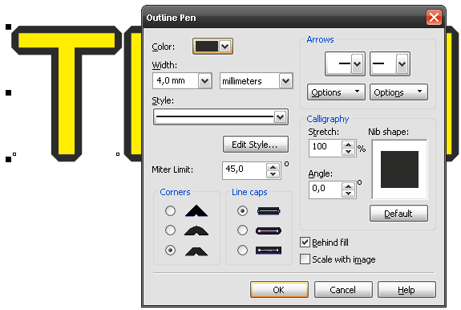

ВОПРОС / ОТВЕТ ДЛЯ НАЧИНАЮЩИХ
polzovatel-902 / 13.07.2010, 09:21/00:41
Форум:
Объясню на примере, чтоб было понятней... Открываю в кореле картинку (футболку с надписью) в формате JPG, мне нужно вытянуть из футболки надпись, т.е разъеденить файл... Говорят нужно формат изменить, еще что-то... Объясните, пожалуйста, что нужно сделать для этого...? Заранее спасибо.
Подскажите пожалуйста,в какую папку CorelDraw 11 копировать фильтры Фотошопа?
Solowejka, При взаимном расположении линий под углом друг к другу X4 делает всё как положено - рисует линию под нужным углом, опираясь на перпендикуляр от расположения конечной точки. Точная привязка при таком "неточном" рисовании не нужна и невозможна. Посмотрите на ситуацию с другой стороны: надо закончить линию на границе объекта, содержащего много точек. X5 в этом непредсказуем: он делает загогулины в неизвестную точку, тогда как X4 оставит ровную линию, при надобности конечную точку которой можно пересунуть куда надо уже при большем приближении
Добавлено (08.04.2011, 19:09)
---------------------------------------------
http://coreldraw.com/forums/p/25868/120784.aspx отмечено как баг
Здравствуйте. Скажите пожалуйста, где корел хранит путь экпорта? можно ли как то его поменять? а то корел зависает при экспорте, потому что перестала существовать папка, в которую экспортировали в последний раз.
Подскажите у кого нибудь был такой глюк с окантовкой? отчего бывает и как это лечить?
Везде уже глюки мерещатся :D
Нужно сменить тип угла F12

harverbary, попробуйте создать такую папку. Вставьте флешку, в администрировании переименуйте диск, создайте на флешке такую папку и попробуйте экспорт из Корела. После этого экспортните в другую папку, чтобы Корел сохранил настройки. В крайнем случае можно поискать в реестре
harverbary, а причём тут корел вообще, когда доступом к папкам управляет винда? Корел всего навсего использует диалоговое окно которое предоставляет сама система. Корел может "заказать" этому окну на какой папке его открыть, а система уже сама решает что с этим делать. Если есть такая папка то откроет на ней, а если её нет то откроет "Мои документы". Если на этом моменте всё виснет, то виновата система.
кто нибудь подскажет я делаю "обводку" не правой кнопкой, а окантовку - откуда углы?
macxrus, в кореле есть интерактивный контур и абрис. Так о чём речь?
речь идет про интерактивный контур - Сообщение # 265
Страницы